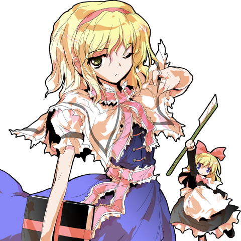

アリス・マーガトロイド 앨리스 마가트로이드
キャラクター 캐릭터
七色の人形遣い。クールで少し距離を置いた話し方、上品な女性語（〜わ、〜かしら）。
칠색의 인형사. 쿨하고 조금 거리를 두는 말투, 품위 있는 여성어(〜わ, 〜かしら).
サンプル6（Asamia） 0:18〜0:27
샘플 6 (Asamia) 0:18〜0:27
台詞 대사
掛け声 기합 (14)
| No | ファイル名 | 状況 상황 | 台詞 | 読み | 意味 뜻 |
|---|---|---|---|---|---|
| 1 | vo_alice_eff_l_01 | 弱攻撃の掛け声 약공격 기합 | ふっ！ | ふっ | 흡! |
| 2 | vo_alice_eff_l_02 | 弱攻撃の掛け声 약공격 기합 | はっ！ | はっ | 핫! |
| 3 | vo_alice_eff_l_03 | 弱攻撃の掛け声 약공격 기합 | えいっ！ | えいっ | 에잇! |
| 4 | vo_alice_eff_l_04 | 弱攻撃の掛け声 약공격 기합 | やっ！ | やっ | 얍! |
| 5 | vo_alice_eff_h_01 | 強攻撃の掛け声 강공격 기합 | はあっ！ | はあっ | 하앗! |
| 6 | vo_alice_eff_h_02 | 強攻撃の掛け声 강공격 기합 | やあっ！ | やあっ | 야앗! |
| 7 | vo_alice_eff_h_03 | 強攻撃の掛け声 강공격 기합 | せいっ！ | せいっ | 세잇! |
| 8 | vo_alice_eff_h_04 | 強攻撃の掛け声 강공격 기합 | てやあっ！ | てやあっ | 테야앗! |
| 9 | vo_alice_eff_w_01 | 強攻撃のひとこと 강공격 한마디 | 行きなさい！ | いきなさい | 가! |
| 10 | vo_alice_eff_w_02 | 強攻撃のひとこと 강공격 한마디 | 甘いわ！ | あまいわ | 어림없어! |
| 11 | vo_alice_eff_w_03 | 強攻撃のひとこと 강공격 한마디 | そこよ！ | そこよ | 거기야! |
| 12 | vo_alice_eff_w_04 | 強攻撃のひとこと 강공격 한마디 | しつこいわね！ | しつこいわね | 끈질기네! |
| 13 | vo_alice_eff_s_01 | ジャンプ・ダッシュの小さな息 점프·대시 숨소리 | ふっ | ふっ | 흣 |
| 14 | vo_alice_eff_s_02 | ジャンプ・ダッシュの小さな息 점프·대시 숨소리 | よっ | よっ | 읏 |
必殺技 필살기 (8)
| No | ファイル名 | 状況 상황 | 台詞 | 読み | 意味 뜻 |
|---|---|---|---|---|---|
| 15 | vo_alice_Special1_01 | 必殺技1（技名） 필살기 1 (기술 이름) | 上海人形！ | しゃんはいにんぎょう | 상하이 인형! |
| 16 | vo_alice_Special1_02 | 必殺技1（ひとこと） 필살기 1 (한마디) | 貫きなさい！ | つらぬきなさい | 꿰뚫어! |
| 17 | vo_alice_Special2_01 | 必殺技2（技名） 필살기 2 (기술 이름) | 蓬莱人形！ | ほうらいにんぎょう | 호라이 인형! |
| 18 | vo_alice_Special2_02 | 必殺技2（ひとこと） 필살기 2 (한마디) | 上は任せたわ。 | うえは まかせたわ | 위는 맡길게. |
| 19 | vo_alice_Special3_01 | 必殺技3（技名） 필살기 3 (기술 이름) | トリップワイヤー！ | とりっぷわいやー | 트립 와이어! |
| 20 | vo_alice_Special3_02 | 必殺技3（ひとこと） 필살기 3 (한마디) | 足元に注意よ。 | あしもとに ちゅういよ | 발밑 조심해. |
| 21 | vo_alice_Special4_01 | 必殺技4（技名） 필살기 4 (기술 이름) | アーティフルサクリファイス！ | あーてぃふるさくりふぁいす | 아티풀 새크리파이스! |
| 22 | vo_alice_Special4_02 | 必殺技4（ひとこと） 필살기 4 (한마디) | 弾けなさい！ | はじけなさい | 터져라! |
スペルカード宣言 스펠카드 선언 (2)
| No | ファイル名 | 状況 상황 | 台詞 | 読み | 意味 뜻 |
|---|---|---|---|---|---|
| 23 | vo_alice_Spell1_call | スペルカード（超必殺技）1の宣言 스펠카드 1 선언 | 「ゴリアテ人形」！ | ごりあてにんぎょう | 골리앗 인형! |
| 24 | vo_alice_Spell2_call | スペルカード（超必殺技）2の宣言 스펠카드 2 선언 | 戦符「リトルレギオン」！ | せんぷ りとるれぎおん | 전부, 리틀 레기온! |
システム・挑発 시스템·도발 (7)
| No | ファイル名 | 状況 상황 | 台詞 | 読み | 意味 뜻 |
|---|---|---|---|---|---|
| 25 | vo_alice_ThrowForward | 前投げ 앞 잡기 | 糸に絡まりなさい。 | いとに からまりなさい | 실에 얽혀 버려. |
| 26 | vo_alice_ThrowBack | 後ろ投げ 뒤 잡기 | 下がってなさい。 | さがってなさい | 물러나 있어. |
| 27 | vo_alice_SpiritCancel | スピリットキャンセル（動作を中断して仕切り直す） 스피릿 캔슬 | 仕切り直しよ。 | しきりなおしよ | 다시 간다. |
| 28 | vo_alice_Bomb | ボム（相手を吹き飛ばす緊急回避） 봄(버스트) | 離れなさい！ | はなれなさい | 떨어져! |
| 29 | vo_alice_GuardCancel | ガードキャンセル（ガード中の反撃） 가드 캔슬 | 無作法ね！ | ぶさほうね | 무례하네! |
| 30 | vo_alice_Taunt_01 | 挑発 도발 | ほら上海、ご挨拶。 | ほら しゃんはい ごあいさつ | 자, 상하이. 인사해. |
| 31 | vo_alice_Taunt_02 | 挑発 도발 | 「ごきげんよう」ですって。 | ごきげんよう ですって | 「안녕하세요」래. |
キャラクター固有 캐릭터 고유 (2)
| No | ファイル名 | 状況 상황 | 台詞 | 読み | 意味 뜻 |
|---|---|---|---|---|---|
| 32 | vo_alice_DollHit_01 | 人形（上海・蓬莱）がやられた 인형이 당함 | 私の人形に、なにするの！ | わたしのにんぎょうに なにするの | 내 인형한테 뭐 하는 거야! |
| 33 | vo_alice_DollHit_02 | 人形（上海・蓬莱）がやられた 인형이 당함 | 人形に触らないで。 | にんぎょうに さわらないで | 인형에 손대지 마. |
被ダメージ・KO 피격·KO (8)
| No | ファイル名 | 状況 상황 | 台詞 | 読み | 意味 뜻 |
|---|---|---|---|---|---|
| 34 | vo_alice_hurt_l_01 | 小ダメージ 약한 피격 | くっ！ | くっ | 큭! |
| 35 | vo_alice_hurt_l_02 | 小ダメージ 약한 피격 | あっ！ | あっ | 앗! |
| 36 | vo_alice_hurt_l_03 | 小ダメージ 약한 피격 | うっ！ | うっ | 윽! |
| 37 | vo_alice_hurt_h_01 | 大ダメージ・吹き飛び・投げられ 강한 피격·날아감·잡힘 | きゃあっ！ | きゃあっ | 꺄악! |
| 38 | vo_alice_hurt_h_02 | 大ダメージ・吹き飛び・投げられ 강한 피격·날아감·잡힘 | ああああっ！ | ああああっ | 아아앗! |
| 39 | vo_alice_hurt_h_03 | 大ダメージ・吹き飛び・投げられ 강한 피격·날아감·잡힘 | いやあっ！ | いやあっ | 싫어! |
| 40 | vo_alice_KO_01 | KO（倒れる） KO | きゃああああっ！ | きゃああああっ | (비명) |
| 41 | vo_alice_KO_02 | KO（倒れる） KO | 糸が……切れちゃった…… | いとが きれちゃった | 실이… 끊어져 버렸어… |
ラウンド・勝敗 라운드·승패 (12)
| No | ファイル名 | 状況 상황 | 台詞 | 読み | 意味 뜻 |
|---|---|---|---|---|---|
| 42 | vo_alice_Intro_01 | 登場（共通） 등장(공통) | 人形劇の、はじまりよ。 | にんぎょうげきの はじまりよ | 인형극의 시작이야. |
| 43 | vo_alice_Intro_02 | 登場（共通） 등장(공통) | 都会派の魔法、見せてあげるわ。 | とかいはの まほう みせてあげるわ | 도시파의 마법을 보여 줄게. |
| 44 | vo_alice_Intro_03 | 登場（共通） 등장(공통) | 糸の届く距離が、私の間合いよ。 | いとのとどくきょりが わたしのまあいよ | 실이 닿는 거리가 내 간격이야. |
| 45 | vo_alice_RoundWin_01 | ラウンド勝利（短く） 라운드 승리(짧게) | 計算どおりよ。 | けいさんどおりよ | 계산대로야. |
| 46 | vo_alice_RoundWin_02 | ラウンド勝利（短く） 라운드 승리(짧게) | 当然ね。 | とうぜんね | 당연하지. |
| 47 | vo_alice_RoundWin_03 | ラウンド勝利（短く） 라운드 승리(짧게) | 退屈だったわ。 | たいくつだったわ | 지루했어. |
| 48 | vo_alice_Win_01 | 試合に勝利 게임 승리 | 人形のほうが、まだ手ごたえがあるわね。 | にんぎょうのほうが まだ てごたえがあるわね | 인형 쪽이 차라리 상대할 맛이 나겠네. |
| 49 | vo_alice_Win_02 | 試合に勝利 게임 승리 | 上海、お疲れさま。帰りましょう。 | しゃんはい おつかれさま かえりましょう | 상하이, 수고했어. 돌아가자. |
| 50 | vo_alice_Win_03 | 試合に勝利 게임 승리 | 糸が汚れたじゃない。 | いとが よごれたじゃない | 실이 더러워졌잖아. |
| 51 | vo_alice_Perfect | ノーダメージで勝利 퍼펙트 승리 | 私に、近づけもしなかったわね。 | わたしに ちかづけもしなかったわね | 나한테 다가오지도 못했네. |
| 52 | vo_alice_RoundLose | ラウンド負け（相手の勝利ポーズ中） 라운드 패배 | ……少し、計算がずれたかしら。 | すこし けいさんが ずれたかしら | …계산이 조금 어긋났나. |
| 53 | vo_alice_TimeOverLose | タイムオーバーで負け 타임오버 패배 | あら、もう時間？ | あら もう じかん | 어머, 벌써 시간이야? |
対戦相手別 상대별 (6)
| No | ファイル名 | 状況 상황 | 台詞 | 読み | 意味 뜻 |
|---|---|---|---|---|---|
| 54 | vo_alice_Intro_marisa_a | 登場：魔理沙戦（先に話す。魔理沙が「力押しも、極めりゃ芸だぜ。」と返します） 등장: 마리사전 (먼저 말함. 마리사의 응답 「힘으로 밀어붙이기도 극에 달하면 재주지.」) | また力押し？ 芸がないわね、魔理沙。 | また ちからおし げいがないわね まりさ | 또 힘으로 밀어붙이게? 재주가 없네, 마리사. |
| 55 | vo_alice_Intro_marisa_b | 登場：魔理沙戦（魔理沙の「アリス、その人形一体貸してくれよ。」に返す） 등장: 마리사전 (마리사의 「앨리스, 그 인형 하나만 빌려줘.」에 대답) | 貸したら、返ってこないでしょう？ | かしたら かえってこないでしょう | 빌려주면 안 돌아오잖아? |
| 56 | vo_alice_Win_marisa | 魔理沙に勝利 마리사에게 승리 | 力だけじゃ、糸はほどけないわ。 | ちからだけじゃ いとは ほどけないわ | 힘만으로는 실을 풀 수 없어. |
| 57 | vo_alice_Intro_patchouli_a | 登場：パチュリー戦（先に話す。パチュリーが「人形の糸、少し調べさせて。」と返します） 등장: 파츄리전 (먼저 말함. 파츄리의 응답 「인형 실, 조금 조사하게 해 줘.」) | 大図書館が、何の用かしら？ | だいとしょかんが なんのようかしら | 대도서관께서 무슨 일이실까? |
| 58 | vo_alice_Intro_patchouli_b | 登場：パチュリー戦（パチュリーの「アリス、また魔導書を覗きに来たの？」に返す） 등장: 파츄리전 (파츄리의 「앨리스, 또 마도서 훔쳐보러 왔어?」에 대답) | 覗くだけよ。魔理沙とは違うわ。 | のぞくだけよ まりさとは ちがうわ | 엿보기만 해. 마리사랑은 달라. |
| 59 | vo_alice_Win_patchouli | パチュリーに勝利 파츄리에게 승리 | 七曜の魔女も、たいしたことないわね。 | しちようのまじょも たいしたことないわね | 칠요의 마녀도 별거 아니네. |
予備（今は使っていない技名・スペル宣言。こちらも収録します） 예비 (지금은 안 쓰는 기술 이름·스펠 선언, 함께 녹음) (13)
| No | ファイル名 | 状況 상황 | 台詞 | 読み | 意味 뜻 |
|---|---|---|---|---|---|
| 60 | vo_alice_Extra_DollThousandSpears | 予備の技名 예비 기술 외침 | 人形千槍！ | にんぎょうせんそう | 인형천창! |
| 61 | vo_alice_Extra_DollCremation | 予備の技名 예비 기술 외침 | 人形火葬！ | にんぎょうかそう | 인형화장! |
| 62 | vo_alice_Extra_DollAmbush | 予備の技名 예비 기술 외침 | 人形伏兵！ | にんぎょうふくへい | 인형복병! |
| 63 | vo_alice_Extra_DollArchers | 予備の技名 예비 기술 외침 | 人形弓兵！ | にんぎょうきゅうへい | 인형궁병! |
| 64 | vo_alice_Extra_SeekerWire | 予備の技名 예비 기술 외침 | シーカーワイヤー！ | しーかーわいやー | 시커 와이어! |
| 65 | vo_alice_Extra_DollsWar | 予備の技名 예비 기술 외침 | ドールズウォー！ | どーるずうぉー | 돌스 워! |
| 66 | vo_alice_Extra_ReturnInanimateness | 予備の技名 예비 기술 외침 | リターンイナニメトネス！ | りたーんいなにめとねす | 리턴 이나니메이트니스! |
| 67 | vo_alice_Extra_LondonDoll | 予備の技名 예비 기술 외침 | 霧の倫敦人形！ | きりの ろんどんにんぎょう | 안개의 런던 인형! |
| 68 | vo_alice_ExtraSpell_FrenchDoll | 予備のスペルカード宣言 예비 스펠카드 선언 | 蒼符「博愛の仏蘭西人形」！ | そうふ はくあいの ふらんすにんぎょう | 창부, 박애의 프랑스 인형! |
| 69 | vo_alice_ExtraSpell_GrandGuignol | 予備のスペルカード宣言 예비 스펠카드 선언 | 「グランギニョル座の怪人」！ | ぐらんぎにょるざの かいじん | 그랑기뇰 극장의 괴인! |
| 70 | vo_alice_ExtraSpell_CursedShanghai | 予備のスペルカード宣言 예비 스펠카드 선언 | 咒符「上海人形」！ | じゅふ しゃんはいにんぎょう | 주부, 상하이 인형! |
| 71 | vo_alice_ExtraSpell_MaidenBunraku | 予備のスペルカード宣言 예비 스펠카드 선언 | 操符「乙女文楽」！ | そうふ おとめぶんらく | 조부, 소녀 분라쿠! |
| 72 | vo_alice_ExtraSpell_ArtfulSacrifice | 予備のスペルカード宣言 예비 스펠카드 선언 | 魔符「アーティフルサクリファイス」！ | まふ あーてぃふるさくりふぁいす | 마부, 아티풀 새크리파이스! |